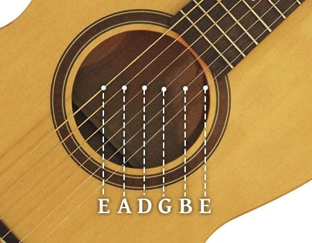
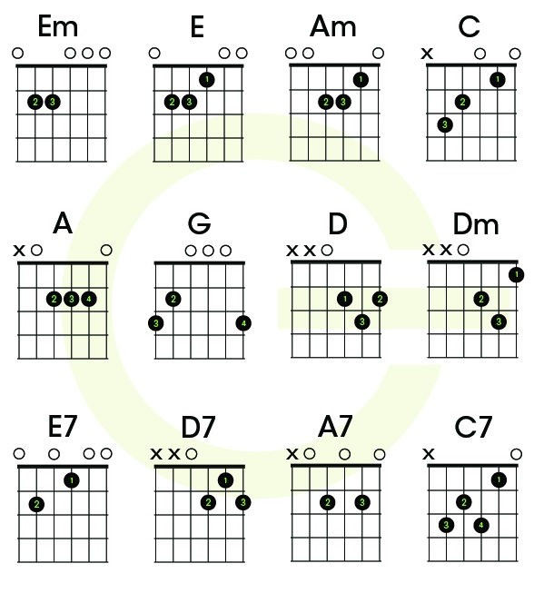

The guitar is a fretted musical instrument that usually has six strings. It is typically played with both hands by strumming or plucking the strings with either a guitar pick or the fingers/fingernails of one hand, while simultaneously fretting (pressing the strings against the frets) with the fingers of the other hand. The sound of the vibrating strings is projected either acoustically, by means of the hollow chamber of the guitar (for an acoustic guitar), or through an electrical amplifier and a speaker.
There are three main types of modern acoustic guitar: the classical guitar (Spanish guitar/nylon-string guitar), the steel-string acoustic guitar and the archtop guitar, which is sometimes called a "jazz guitar". The tone of an acoustic guitar is produced by the strings' vibration, amplified by the hollow body of the guitar, which acts as a resonating chamber. The classical guitar is often played as a solo instrument using a comprehensive finger-picking technique where each string is plucked individually by the player's fingers, as opposed to being strummed. The term "finger-picking" can also refer to a specific tradition of folk, blues, bluegrass, and country guitar playing in the United States. The acoustic bass guitar is pitched one octave below a regular guitar.
Guitar Basics

String Names
We can see from the guitar anatomy diagram that a guitar has six strings, but those strings aren’t all the same.Going from the thickest to the thinnest, the guitar strings are named E A D G B E.
A good way of remembering this is:
Eddie.
Ate.
Dynamite.
Good.
Bye.
Eddie.
Guitar strings are also numbered 1 to 6, going from the thinnest to the thickest (not the other way around!)
Tuning
If you want anything you play on guitar to sound good, your guitar needs to be in tune. The best way to get in tune is to use a guitar tuner. There’s a few different tuners available. If you have an iPhone for example, there’s a free app you can install called GuitarTuna.
How to Hold a Guitar
Holding your guitar correctly is perhaps the most important thing you need to know if you want to be a guitarist.If you don’t hold your guitar correctly, you’ll be uncomfortable and everything will be difficult to play
Let’s start as we mean to go on.If you’re right-handed, you want the body of the guitar resting on your right knee with the neck of the guitar pointing off to your left so you can strum and pick the strings with your right hand and press the strings down against the frets with your left hand.
Chords

One of the first skills that all guitarists learn is how to read a chord diagram. These diagrams are very helpful when it comes to showing chord shapes and their fingerings.
A chord diagram shows the neck of the guitar seen from the front, as if you held your guitar in front of you.
The bass string (the low E string) will beon the left.
The frets are symbolized by squares.
The black circles tell you where to place your fingers. They are numbered to specify the position of each finger.
From 1 for the index to 4 for the little finger.
A cross over a rope indicates that it should not be played
A round indicates that you have to play the “open string”, it means without pressing any square.
Tabs
Learning how to read guitar TABs is an important tool that makes it easier for beginning guitar players to learn how to play. Thankfully, guitar TABs are also the easiest method of notating music for guitar.
Since most guitars are six-string guitars, we’ll look at tabs applicable to six-strings. For guitars with seven strings or more, it’s similar, but the tabs have additional lines.
First Try
Now that you've learned the basics of playing the guitar, it's time to pick a song and play it on the guitar. Remember to always tune first before playing and PRACTICE MAKES PERFECT. Time is a great teacher. Goodluck and Thank you for reading.